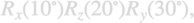

tweezer.rotation
To account for particle rotations in tweezer simulations we provide the tweezer.rotation class that uses quaternions. In most cases of interest this class is only used internally.
Contents
Initialization
The rotation of a particle is initialized through
% initialize rotation matrix using quaternions % rot - rotation matrix or matrices for particles % q - quaternion vector or matrix obj = tweezer.rotation( rot ); % initialization using matrix obj = tweezer.rotation( 'quater', q ); % initialization using quaternions (q0,q1,q2,q3)
Below we discuss how to set up rotation matrices rot.
Methods
Once the tweezer.rotation is initialized, the following functions can be used.
% build from quaternion representation a rotation matrix ROT rot = eval( obj ); % derivative of quaternions for given angular velocity % w - angular velocity % y - derivative of quaternions y = deriv( obj, w );
multipole.rotation
In Matlab there exist numerous functions for setting up rotation matrices. In addition, we provide the function multipole.rotation for setting up rotation matrices.
% set up rotation matrix using Euler angles % t - vector or matrix of angles % 'axes' - sequence of rotation axes, 'xzx' on default (from left to right) % 'angle' - 'rad' or 'deg' (default) % 'trans' - transpose of matrix, 0 on default rot = multipole.rotation( t, 'axes', 'xz', 'angle', 'deg', 'trans', 0 );
To set up for instance a rotation matrix for the following rotations

one provides a vector [30,20,10] that defines the rotations such that the rotations are concatenated from left to right,
% rotation matrix for R_x(10)×R_z(20)×R_x(30) rot = multipole.rotation( [ 30, 20, 10 ], 'axes', 'yzx' );
Multiple rotation matrices can be combined into one array
rot = multipole.rotation( [ 30, 20, 10; 10, 20, 30 ] )
rot(:,:,1) =
0.7713 -0.6337 0.0594
0.6131 0.7146 -0.3368
0.1710 0.2962 0.9397
rot(:,:,2) =
0.7713 -0.6131 0.1710
0.6337 0.7146 -0.2962
0.0594 0.3368 0.9397
Copyright 2025 Ulrich Hohenester